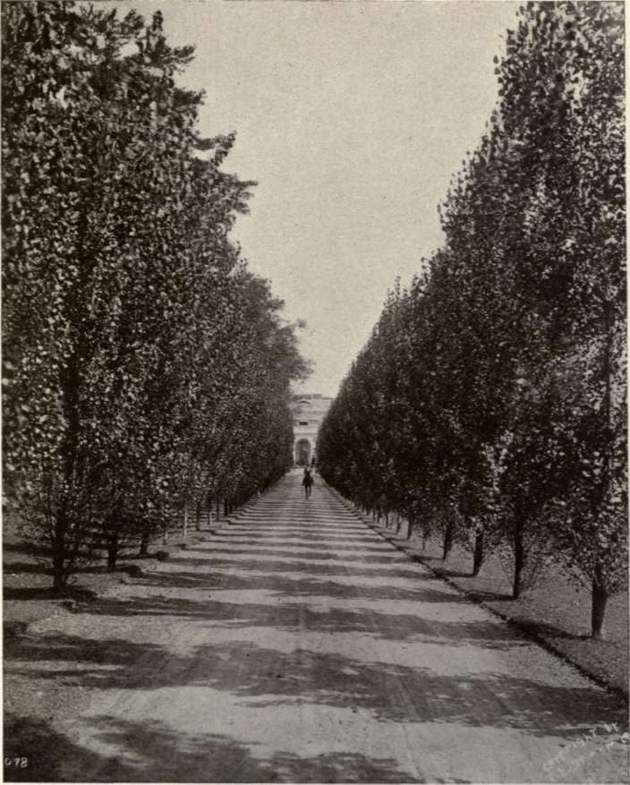

``Phew, that was the last one!'' exclaimed the garden helper Tim as he
threw the last tree plant to the ground. His employer, countess
Esmeralda Hunt who owned the estate, has ordered him to arrange an
avenue of aspen trees along both sides of the front road leading up to
the house. The first trees in the avenue are supposed to be planted
at the very beginning of the road, and the last trees of the avenue at
the very end of the road. Tim, who was constantly being reminded of
her sense of accuracy, knew that the countess would insist on the
trees being placed in perfectly aligned tree pairs, one on each side
of the road, and with exactly the same spacing between the pairs along
the road. However, when bringing the tree plants to the estate, Tim
had just dropped them arbitrarily along the left side of the road and
was now facing the task of moving the trees to their correct positions
to meet the countess's requirements. Being stronger in mind than in
arms, and since it was time for a coffee break anyway before he
started digging, he sat down to figure out which trees to move to
which positions so as to minimize the total (Euclidean) distance that
he had to move the trees.
The input file contains several test cases, each of them as described below.
The input starts with a positive even integer N
between 4
and
2000
(inclusive), giving the total number of trees in the avenue.
The next line contains two integers L
and W
, where
1 L10000
is the length of the road, in meters, and
1W20
is
the width of the road, in meters. The next N
lines each describe
where Tim had dropped of the trees. Each such line contains an
integer
0pL
indicating the position of a tree plant along
the left side of the road, measured in meters from the start of the
road.
L10000
is the length of the road, in meters, and
1W20
is
the width of the road, in meters. The next N
lines each describe
where Tim had dropped of the trees. Each such line contains an
integer
0pL
indicating the position of a tree plant along
the left side of the road, measured in meters from the start of the
road.
For each test case, write to the output the smallest total number of meters the tree
plants need to be moved, on a line by itself. The answer should be given with an absolute
or relative error of at most 10-6
.
4
10 1
1
0
10
10
6
10 1
0
9
3
5
5
6
2.4142135624
9.2853832858